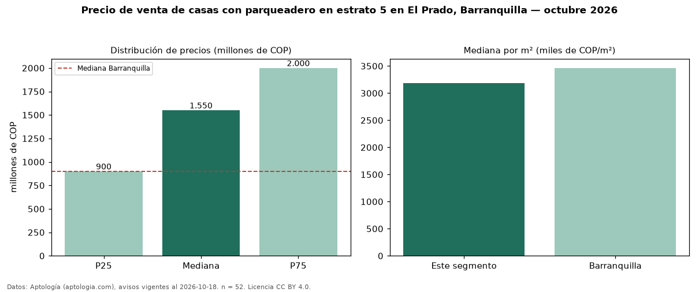

Precio de venta de casas con parqueadero en estrato 5 en El Prado, Barranquilla — octubre 2026
Con 52 avisos vigentes, el precio mediano de casas con parqueadero en estrato 5 en venta en El Prado, Barranquilla es COP 1,55 mil millones. Frente a la mediana de las casas en estrato 5 en venta de El Prado (COP 1,65 mil millones, n = 66), queda 6 % por debajo; este segmento reúne el 79 % de esos avisos. Por metro cuadrado, la mediana es COP 3,18 millones/m² (n = 51), 1 % por debajo de las casas en estrato 5 en venta de El Prado (COP 3,22 millones/m²). El área mediana anunciada es 424 m². El segmento con más oferta es el de 3 o más habitaciones (49 avisos, mediana COP 1,50 mil millones). La mitad central de los avisos va de COP 900 millones a COP 2,00 mil millones (razón 2,2), una dispersión alta. La mediana de todas las casas en venta de Barranquilla es COP 900 millones (+72 % de diferencia). Datos: Aptología (aptologia.com), CC BY 4.0 — https://www.aptologia.com/casas-en-venta/barranquilla/el-prado. Archivos: PDF, CSV con las cifras y gráfica PNG.

| Avisos únicos | 52 |
|---|---|
| Percentil 25 | COP 900.000.000 |
| Mediana | COP 1.550.000.000 |
| Percentil 75 | COP 2.000.000.000 |
| Mediana por m² | COP 3.184.523 |
Fuente: avisos vigentes de portales inmobiliarios recopilados por Aptología, deduplicados (mínimo 30 avisos únicos por celda). Precios pedidos, no cerrados. Fecha: 2026-10-18.